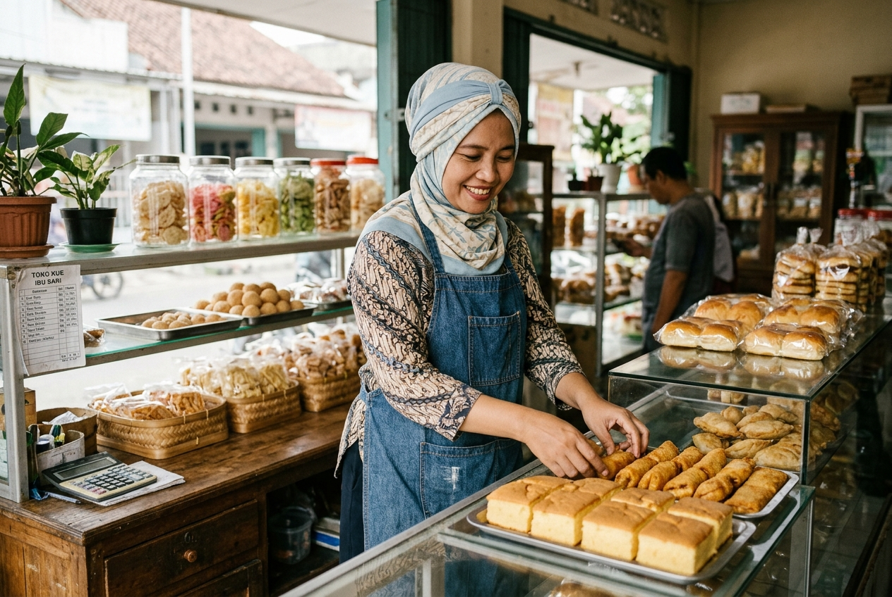

Pilar 1

Pilar 1: Kemandirian Ekonomi
Penguatan Modal Usaha Bebas Riba (Ibu Tangguh)
Program permodalan bergulir Qardhul Hasan (tanpa bunga dan tanpa biaya tambahan) yang dipadukan dengan pendampingan manajemen keuangan rumah tangga. Dirancang khusus untuk memutus jeratan rentenir keliling dan pinjaman online ilegal yang mengancam keutuhan keluarga prasejahtera.
Fokus Intervensi & Kegiatan:
- Suntikan modal alat produksi dan bahan baku usaha mikro rumahan (kuliner, kerajinan, warung).
- Mentoring pencatatan kas harian & literasi syariah bebas bunga bagi kelompok ibu.
- Pemberdayaan kelompok usaha bersama berbasis majelis taklim perempuan di wilayah binaan.